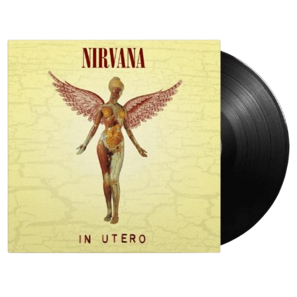
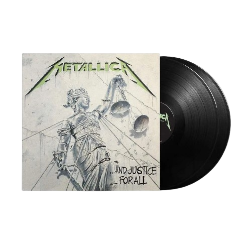

Lançado em 21 de setembro de 1993, o álbum In Utero foi o terceiro e último disco de estúdio da banda Nirvana, criado de forma crua e visceral para contra-atacar a produção polida do sucesso anterior, Nevermind.
Valor:R$:287,99

And Justice for All é o quarto álbum de estúdio do Metallica e marca um dos momentos mais sombrios, complexos e marcantes da história do thrash metal.
Valor:R$:327,64
O álbum Fallen, lançado em 4 de março de 2003 pela Wind-up Records, é o trabalho de estreia da banda norte-americana Evanescence e se tornou um marco do metal alternativo e da estética gótica dos anos 2000.
Valor:R$:250,00